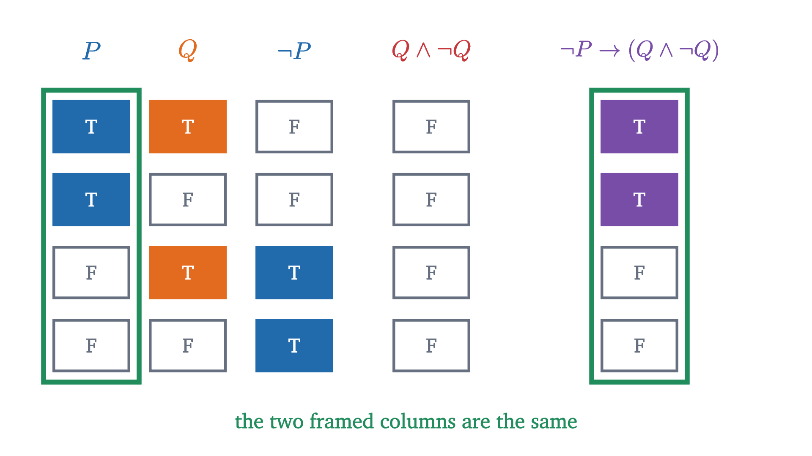

Proof by contradiction: why √2 is not a fraction
No fraction squares to exactly 2. To prove it, assume one does and follow the assumption until it breaks. That method is proof by contradiction.
AssumesIf-then statements: converse and contrapositiveQuantifiers: for all, there exists, and negation
A square floor 17 units on a side has area 289. Two square tiles 12 units on a side have a combined area of 288. If the two numbers agreed we would have $17^2 = 2 \times 12^2$, which says $\left(\frac{17}{12}\right)^2 = 2$, and the fraction $\frac{17}{12}$ would be the square root of 2. It misses by one part in 289, and with all the whole numbers there are to choose from it seems certain that some other pair closes the gap.
No pair does, and this has been known for well over two thousand years. The puzzle is how anyone could know it, since there are infinitely many fractions and checking them one at a time never ends. A proof has to deal with every fraction at once. The method that does so is to suppose that a fraction with square 2 exists and to reason from that supposition until it produces something impossible.
Three earlier facts are used below. From truth tables: a statement is either true or false, and $Q \land \lnot Q$ is false whatever $Q$ is. From implication: $P \to Q$ is false only when $P$ is true and $Q$ is false, and it is equivalent to its contrapositive $\lnot Q \to \lnot P$. From quantifiers: the negation of “for all $x$, $A(x)$” is “there exists $x$ such that not $A(x)$”.
An integer is one of $\dots, -2, -1, 0, 1, 2, \dots$. An integer $n$ is even if $n = 2k$ for some integer $k$ and odd if $n = 2k + 1$ for some integer $k$; every integer is one or the other and none is both, because dividing by 2 leaves remainder 0 or 1. A rational number is a number that can be written $\frac{p}{q}$ with $p$ and $q$ integers and $q \neq 0$. A real number that is not rational is irrational.
What a search can and cannot show
By the Pythagorean theorem, the diagonal $d$ of a square of side 1 satisfies $d^2 = 1^2 + 1^2 = 2$. We write $\sqrt{2}$ for this length, about $1.41421$. A fraction $\frac{p}{q}$ of positive integers equals $\sqrt 2$ exactly when $\frac{p^2}{q^2} = 2$, that is, when
So the question is whether a perfect square is ever exactly twice another. Try the small denominators: for each $q$, take the $p$ that brings $p^2$ nearest to $2q^2$.
All seven denominators miss. Larger numbers come closer in proportion, as $99^2 = 9801$ against $2 \times 70^2 = 9800$ does, but a table of any length leaves infinitely many denominators unexamined. If the answer is “never”, we need a reason that applies to all of them, and the table contains a hint of one.
Pause and try
Every entry in the column $2q^2$ is even. If the two columns $p^2$ and $2q^2$ are ever to agree, what must be true of $p^2$? Now look at the rows where $p$ is odd. Could any row with an odd $p$ have been exact?
Show answerHide answer
For the columns to agree, $p^2$ must be even. The rows with odd $p$ are $p = 1, 3, 7$, with squares $1, 9, 49$, all odd. An odd number cannot equal an even one, so those rows had no chance. This suggests that the square of an odd number is always odd, which would mean that only an even $p$ can work.
Odd numbers have odd squares
Dots show why. Arrange $7 \times 7$ dots in a square and pair them off.
The same pairing works for any odd side length. We want the statement “if $n^2$ is even then $n$ is even”, and the dots argue from the other end: they start with $n$ odd and conclude that $n^2$ is odd. That is the contrapositive, which is an equivalent statement, so proving it is enough.
The parity proof
Apply the lemma to a supposed solution of $p^2 = 2q^2$. The right side is even, so $p^2$ is even, so $p$ is even, say $p = 2k$. Then $4k^2 = 2q^2$, so $q^2 = 2k^2$, and by the lemma again $q$ is even. Any fraction equal to $\sqrt 2$ would have an even numerator and an even denominator.
That is strange but not yet impossible, since $\frac{6}{4}$ has the same feature. The trouble is that it must hold for every fraction equal to $\sqrt 2$, including the one left after cancelling the 2. To get a clean impossibility we begin with a fraction from which nothing can be cancelled. A fraction $\frac{p}{q}$ with $q > 0$ is in lowest terms if no integer greater than 1 divides both $p$ and $q$. Every rational number can be written in lowest terms: among all the ways of writing it with a positive denominator, take one whose denominator is as small as possible. If some $d > 1$ divided both $p$ and $q$, then $\frac{p/d}{q/d}$ would be the same number with a smaller denominator.
Pause and try
Run the same five steps on the false claim “no rational number has square 4”, starting from $p^2 = 4q^2$. At which step does the argument stop producing what it needs?
Show answerHide answer
Step 2 survives: $p^2 = 4q^2$ is even, so $p = 2k$. Step 3 becomes $4k^2 = 4q^2$, that is, $k^2 = q^2$, and this says nothing about whether $q$ is even. Step 4 has no support, and no contradiction appears, which is as it should be because $\frac{2}{1}$ has square 4. The proof for 2 used the fact that halving $4k^2 = 2q^2$ leaves a factor of 2 on one side only.
The shape of the argument
Set the arithmetic aside and look at the logic. We wanted to establish a statement $P$: “no rational number has square 2”. We assumed $\lnot P$. From that assumption we derived a statement $Q$ (“no integer greater than 1 divides both $p$ and $q$”) together with $\lnot Q$. So we showed that the conditional
is true. The table shows why that settles $P$.

A conditional with a false conclusion is true only when its hypothesis is false. So once we know this conditional is true, we know that $\lnot P$ is false, and since every statement is true or false, $P$ is true.
When $P$ is a conditional $A \to B$, its negation is $A \land \lnot B$, so a proof by contradiction of “if $A$ then $B$” starts by assuming $A$ and $\lnot B$. Compare this with the two other ways to prove a conditional.
| Method | You assume | You must reach |
|---|---|---|
| Direct proof | $A$ | $B$ |
| Contrapositive | $\lnot B$ | $\lnot A$ |
| Contradiction | $A$ and $\lnot B$ | any contradiction |
The parity lemma was proved by contrapositive: we assumed $n$ is odd and aimed at “$n^2$ is odd”, never using the hypothesis “$n^2$ is even”. A proof by contradiction is looser on both sides. It gives you two assumptions to work with instead of one, and it does not say in advance what the contradiction will be: for $\sqrt 2$ it concerned lowest terms, which the theorem does not mention. If a contradiction argument reaches $\lnot A$ without ever using $A$, it was a contrapositive proof and is cleaner written as one.
The freedom has a cost. Everything written after “suppose” describes a situation that does not exist if the proof succeeds, so no line can be tested on an example, and an algebra slip produces an absurdity that looks the same as the one you were hoping for.
A second proof: the smaller square
The tiles from the opening give a second proof, with a different kind of contradiction.
Suppose $p^2 = 2q^2$ for positive integers $p$ and $q$. Then a square floor of side $p$ has exactly the area of two square tiles of side $q$. Since $q^2 < p^2 = 2q^2 < 4q^2$, we have $q < p < 2q$: one tile is smaller than the floor, and two side by side are too wide for it. Push the tiles into opposite corners.
Here is the accounting behind the third step. The two tiles together cover the floor except for the two bare corners, and they cover the middle square twice. So
If $p^2 = 2q^2$, the two leftover terms must cancel: $(2q - p)^2 = 2(p - q)^2$. Algebra confirms this without the picture:
which is 0 when $p^2 = 2q^2$.
So from one solution $(p, q)$ in positive integers we get another, $(2q - p,\; p - q)$. Both entries are positive integers because $q < p < 2q$, and the new second entry is smaller than the old one, since $p - q < q$. Apply the step again and again, and the second entries form a strictly decreasing sequence of positive integers that never ends. But there are only eleven positive integers below 12, so a decreasing sequence of positive integers that starts at 12 has at most twelve terms, and the same goes for any starting value.
This style of argument is called infinite descent: show that any solution yields a smaller one, and conclude that there is none. The fact about positive integers that it rests on has a name.
We take this as a basic property of the positive integers; it is logically equivalent to the principle of induction. It is special to them: the positive rationals have no least element (halve any candidate), and neither does the set of all integers. With the principle named, the descent becomes a short proof by contradiction.
The first proof leaned on the same principle without saying so. “Take a way of writing $r$ whose denominator is as small as possible” is a use of well-ordering.
Infinitely many primes
A prime is an integer greater than 1 whose only positive divisors are 1 and itself: $2, 3, 5, 7, 11, 13, \dots$ They thin out as numbers grow, and it is fair to ask whether they stop. One preliminary fact is needed, and well-ordering supplies it.
Pause and try
Let $N = 2 \times 3 \times 5 \times 7 + 1 = 211$. What remainder does $N$ leave on division by each of 2, 3, 5 and 7? What does that tell you about the prime that the lemma promises?
Show answerHide answer
$N$ is 1 more than a multiple of each of them, so each division leaves remainder 1, and none of 2, 3, 5, 7 divides $N$. The lemma says some prime divides $N$, so that prime is not one of 2, 3, 5, 7. (In this case 211 is itself prime.)
Be careful about what $N$ is. The proof never says that $N$ is prime, and in general it is not: $2 \cdot 3 \cdot 5 \cdot 7 \cdot 11 \cdot 13 + 1 = 30031 = 59 \times 509$. Nor is $N$, or its smallest prime factor, the next prime after the list: for the list $2, 3$ we get $N = 7$, which skips 5. The only property used is that no prime on the list divides $N$, while some prime does.
Without its first and last sentences, the proof shows something positive: given any finite list of primes, there is a prime not on the list. That is how Euclid stated it, and it is a recipe too, since the smallest prime factor of $N$ can be computed.
Worked examples
A proof to debug
Pause and try
Find the error in the following argument, and decide whether the claim is true.
Claim. The sum of two irrational numbers is always irrational.
”Proof.” Suppose not. Then the sum of two irrational numbers is rational. Take the irrational numbers $\sqrt 2$ and $\sqrt 2$. Their sum is $2\sqrt 2$. If $2\sqrt 2$ were a rational number $s$, then $\sqrt 2 = \frac{s}{2}$ would be rational, which it is not. So $2\sqrt 2$ is irrational, contradicting the supposition. Hence the claim holds.
Show answerHide answer
The claim is “for all irrational $a$ and $b$, $a + b$ is irrational”. Its negation is “there exist irrational $a$ and $b$ with $a + b$ rational”. The “proof” instead supposed that every sum of two irrationals is rational, refuted that with one example, and concluded the original claim. It negated “for all” as “for none”. The claim itself is false: $\sqrt 2$ and $-\sqrt 2$ are irrational and their sum is 0.
Common mistakes and limits
The method and the result both have limits. A contradiction shows that something is so without always showing why, so when a direct proof is available it is usually the more informative one. The parity argument, for its part, does not settle every square root at once: for a positive integer $n$, $\sqrt n$ is rational only when $n$ is a perfect square, but we proved this only for $n = 2$ and $n = 3$. The general proof uses unique factorization into primes, which we have not established.
Stepping back
The difficulty at the start was the word “no”: a claim that among infinitely many fractions not one works. Contradiction converts such a claim into reasoning about a single imagined object. Assume a counterexample exists, give it a name, and you can compute with it until it is forced to have two incompatible properties. In both proofs the pressure came from size: lowest terms and the least element both say “there is nothing smaller”, and the supposed solution kept producing something smaller. The next lesson turns from proving to counting, and the lesson after it uses contradiction once more, on infinite sets.
Check yourself
You want to prove by contradiction: “for every integer $n$, if $n^2$ is divisible by 3 then $n$ is divisible by 3”. What do you assume?
Problems
Problems 1 to 3 repeat the moves of the lesson, 4 to 6 combine them, and 7 and 8 go further.
Problem 1
Prove that for every integer $n$, if $n^2$ is odd then $n$ is odd. State which method you used.
Show solutionHide solution
By contrapositive: we show that if $n$ is not odd then $n^2$ is not odd. If $n$ is not odd it is even, so $n = 2k$ for an integer $k$, and $n^2 = 4k^2 = 2(2k^2)$ is even, hence not odd.
Problem 2
Run Euclid’s construction on each list of primes and factor the result: (a) $3, 5, 7$; (b) $2, 7$. In each case check that no prime factor of $N$ is on the list, and say whether $N$ is prime.
Show solutionHide solution
(a) $N = 3 \cdot 5 \cdot 7 + 1 = 106 = 2 \times 53$. Not prime; its prime factors 2 and 53 are not among 3, 5, 7. (b) $N = 2 \cdot 7 + 1 = 15 = 3 \times 5$. Not prime; 3 and 5 are not among 2, 7. The new primes can be smaller than the ones on the list.
Problem 3
Let $x$ be irrational and let $r$ be a rational number with $r \neq 0$. Prove that $rx$ is irrational. Where is $r \neq 0$ used, and what happens without it?
Show solutionHide solution
Suppose, for contradiction, that $x$ is irrational, $r \neq 0$ is rational, and $rx$ is rational, say $rx = s$. Because $r \neq 0$ we may divide: $x = \frac{s}{r}$. A quotient of two rationals with nonzero divisor is rational, since $\frac{a}{b} \div \frac{c}{d} = \frac{ad}{bc}$ and $c \neq 0$ when $r = \frac{c}{d} \neq 0$. So $x$ is rational, a contradiction. The hypothesis $r \neq 0$ was used to divide. Without it the statement is false: $0 \cdot \sqrt 2 = 0$ is rational.
Problem 4
Prove that $\sqrt[3]{2}$ is irrational.
Show solutionHide solution
First a lemma: if $n^3$ is even then $n$ is even. By contrapositive, if $n = 2k + 1$ then $n^3 = 8k^3 + 12k^2 + 6k + 1 = 2(4k^3 + 6k^2 + 3k) + 1$ is odd. Now suppose, for contradiction, that $\sqrt[3]{2} = \frac{p}{q}$ in lowest terms with $p, q$ positive integers. Cubing, $p^3 = 2q^3$, so $p^3$ is even and $p = 2k$. Then $8k^3 = 2q^3$, so $q^3 = 4k^3 = 2(2k^3)$ is even, and $q$ is even. So 2 divides both $p$ and $q$, contradicting lowest terms.
Problem 5
Start from the near miss $(p, q) = (99, 70)$ and apply the step $(p, q) \to (2q - p,\ p - q)$ until the second entry reaches 1. Record $p^2 - 2q^2$ at each stage. Then explain the pattern using the identity from the lesson.
Show solutionHide solution
The pairs are $(99, 70) \to (41, 29) \to (17, 12) \to (7, 5) \to (3, 2) \to (1, 1)$; for instance $2 \cdot 70 - 99 = 41$ and $99 - 70 = 29$. The values of $p^2 - 2q^2$ are $9801 - 9800 = 1$, $1681 - 1682 = -1$, $289 - 288 = 1$, $49 - 50 = -1$, $9 - 8 = 1$, $1 - 2 = -1$. The identity $(2q - p)^2 - 2(p - q)^2 = 2q^2 - p^2 = -(p^2 - 2q^2)$ says each step flips the sign of the miss and keeps its size. So a miss of $\pm 1$ stays $\pm 1$ all the way down, and an exact solution, with miss 0, would stay exact all the way down, which is what the descent proof exploits.
Problem 6
Find the flaw. Claim: 1 is the largest positive integer. ”Proof”: Let $n$ be the largest positive integer. Suppose, for contradiction, that $n \neq 1$. Then $n \geq 2$, so $n^2 > n$. But $n^2$ is a positive integer, and it is larger than the largest positive integer, a contradiction. Hence $n = 1$.
Show solutionHide solution
The first sentence assumes that a largest positive integer exists. That was never proved, and it is false, since $n + 1 > n$ for every $n$. The steps after it are valid, and what they establish is the conditional “if a largest positive integer $n$ exists, then $n = 1$”. A conditional with a false hypothesis is true and tells us nothing about its conclusion. The contradiction came from two assumptions together, “$n$ is the largest positive integer” and “$n \neq 1$”, and the argument blamed the second while the first was the false one. A contradiction refutes the conjunction of everything assumed.
Problem 7
Prove that $\sqrt 2 + \sqrt 3$ is irrational.
Show solutionHide solution
Suppose, for contradiction, that $r = \sqrt 2 + \sqrt 3$ is rational. Squaring, $r^2 = 2 + 2\sqrt 6 + 3$, so $\sqrt 6 = \frac{r^2 - 5}{2}$, which is rational because sums, products and quotients (by nonzero numbers) of rationals are rational. So it is enough to show that $\sqrt 6$ is irrational. Suppose $\sqrt 6 = \frac{p}{q}$ in lowest terms with $p, q$ positive integers. Then $p^2 = 6q^2 = 2(3q^2)$ is even, so $p = 2k$ by the parity lemma. Then $4k^2 = 6q^2$, so $2k^2 = 3q^2$ and $3q^2$ is even. If $q$ were odd, $q^2$ would be odd and $3q^2$, a product of odd numbers, would be odd. So $q$ is even. Then 2 divides both $p$ and $q$, contradicting lowest terms. Hence $\sqrt 6$ is irrational, which contradicts the rationality of $\frac{r^2 - 5}{2}$, and $r$ is irrational.
Problem 8
Every odd prime has the form $4k + 1$ or $4k + 3$. Prove that there are infinitely many primes of the form $4k + 3$. (Hint: consider $N = 4p_1 p_2 \cdots p_n - 1$, and first show that a product of numbers of the form $4k + 1$ again has that form.)
Show solutionHide solution
Product fact. $(4a + 1)(4b + 1) = 16ab + 4a + 4b + 1 = 4(4ab + a + b) + 1$, so a product of two numbers of the form $4k + 1$ has that form, and by repeating, so does a product of any number of them.
Factoring into primes. Every integer $N > 1$ is a product of primes: by the prime factor lemma $N = pM$ with $p$ prime; if $M > 1$, apply the lemma to $M$, and so on. The quotients strictly decrease, so the process stops.
The proof. Suppose, for contradiction, that $p_1, \dots, p_n$ are all the primes of the form $4k + 3$ (the list is not empty, since it contains 3). Let $N = 4p_1 \cdots p_n - 1$. Then $N \geq 11$, and $N = 4(p_1 \cdots p_n - 1) + 3$ has the form $4k + 3$. In particular $N$ is odd, so every prime factor of $N$ is odd, hence of the form $4k + 1$ or $4k + 3$. If all of them had the form $4k + 1$, then $N$, their product, would have the form $4k + 1$ by the product fact. But $N$ leaves remainder 3 on division by 4. So some prime factor $p$ of $N$ has the form $4k + 3$, and by assumption $p$ is one of the $p_i$. Then $p$ divides $4p_1 \cdots p_n$ and $p$ divides $N$, so $p$ divides their difference, which is 1. No prime divides 1. This contradiction proves the claim.